Last updated: 2021-09-12
Checks: 7 0
Knit directory:
VSA_altitude_hold/
This reproducible R Markdown analysis was created with workflowr (version 1.6.2). The Checks tab describes the reproducibility checks that were applied when the results were created. The Past versions tab lists the development history.
Great! Since the R Markdown file has been committed to the Git repository, you know the exact version of the code that produced these results.
Great job! The global environment was empty. Objects defined in the global environment can affect the analysis in your R Markdown file in unknown ways. For reproduciblity it’s best to always run the code in an empty environment.
The command set.seed(20210617) was run prior to running the code in the R Markdown file.
Setting a seed ensures that any results that rely on randomness, e.g.
subsampling or permutations, are reproducible.
Great job! Recording the operating system, R version, and package versions is critical for reproducibility.
Nice! There were no cached chunks for this analysis, so you can be confident that you successfully produced the results during this run.
Great job! Using relative paths to the files within your workflowr project makes it easier to run your code on other machines.
Great! You are using Git for version control. Tracking code development and connecting the code version to the results is critical for reproducibility.
The results in this page were generated with repository version 98e6cf4. See the Past versions tab to see a history of the changes made to the R Markdown and HTML files.
Note that you need to be careful to ensure that all relevant files for the
analysis have been committed to Git prior to generating the results (you can
use wflow_publish or wflow_git_commit). workflowr only
checks the R Markdown file, but you know if there are other scripts or data
files that it depends on. Below is the status of the Git repository when the
results were generated:
Ignored files:
Ignored: .Rhistory
Ignored: .Rproj.user/
Ignored: renv/library/
Ignored: renv/local/
Ignored: renv/staging/
Note that any generated files, e.g. HTML, png, CSS, etc., are not included in this status report because it is ok for generated content to have uncommitted changes.
These are the previous versions of the repository in which changes were made
to the R Markdown (analysis/PID_task_analysis_VSA.Rmd) and HTML (docs/PID_task_analysis_VSA.html)
files. If you’ve configured a remote Git repository (see
?wflow_git_remote), click on the hyperlinks in the table below to
view the files as they were in that past version.
| File | Version | Author | Date | Message |
|---|---|---|---|---|
| Rmd | 98e6cf4 | Ross Gayler | 2021-09-12 | WIP |
| Rmd | cfe02a7 | Ross Gayler | 2021-09-12 | WIP |
| Rmd | 65a4b46 | Ross Gayler | 2021-09-12 | WIP |
| html | 65a4b46 | Ross Gayler | 2021-09-12 | WIP |
| Rmd | 89b2f22 | Ross Gayler | 2021-09-12 | WIP |
| html | 89b2f22 | Ross Gayler | 2021-09-12 | WIP |
| Rmd | c51f761 | Ross Gayler | 2021-09-12 | WIP |
| html | c51f761 | Ross Gayler | 2021-09-12 | WIP |
| Rmd | da1f2fa | Ross Gayler | 2021-09-12 | WIP |
| html | da1f2fa | Ross Gayler | 2021-09-12 | WIP |
| Rmd | d27c378 | Ross Gayler | 2021-09-12 | WIP |
| html | d27c378 | Ross Gayler | 2021-09-12 | WIP |
| html | 2e83517 | Ross Gayler | 2021-09-11 | WIP |
| Rmd | ff213fa | Ross Gayler | 2021-09-11 | WIP |
| Rmd | 9a1cae9 | Ross Gayler | 2021-09-10 | WIP |
This notebook attempts to make a VSA implementation of the statistical model of the PID input/output function developed in the PID Task Analysis notebook.
The scalar inputs are represented using the spline encoding developed in the Linear Interpolation Spline notebook.
The VSA representations of the inputs are informed by the encodings developed in the feature engineering section.
The knots of the splines are chosen to allow curvature in the response surface where it is needed.
The input/output function will be learned by regression from the multi-target data set.
\(e\) and \(e_{orth}\) will be used as the input variables and I will ignore the VSA calculation of those quantities in this notebook (except for the final section where I unsuccessfully attempt to use \(k_{tgt}\), \(z\), and \(dz\) as the input variables).
We will build up the model incrementally to check that things are working as expected.
This notebook is based on the data generated by the simulation runs with multiple target altitudes per run.
Read the data from the simulations and mathematically reconstruct the values of the nodes not included in the input files.
Only a small subset of the nodes will be used in this notebook.
# function to clip value to a range
clip <- function(
x, # numeric
x_min, # numeric[1] - minimum output value
x_max # numeric[1] - maximum output value
) # value # numeric - x constrained to the range [x_min, x_max]
{
x %>% pmax(x_min) %>% pmin(x_max)
}
# function to extract a numeric parameter value from the file name
get_param_num <- function(
file, # character - vector of file names
regexp # character[1] - regular expression for "param=value"
# use a capture group to get the value part
) # value # numeric - vector of parameter values
{
file %>% str_match(regexp) %>%
subset(select = 2) %>% as.numeric()
}
# function to extract a sequence of numeric parameter values from the file name
get_param_num_seq <- function(
file, # character - vector of file names
regexp # character[1] - regular expression for "param=value"
# use a capture group to get the value part
) # value # character - character representation of a sequence, e.g. "(1,2,3)"
{
file %>% str_match(regexp) %>%
subset(select = 2) %>%
str_replace_all(c("^" = "(", "_" = ",", "$" = ")")) # reformat as sequence
}
# function to extract a logical parameter value from the file name
get_param_log <- function(
file, # character - vector of file names
regexp # character[1] - regular expression for "param=value"
# use a capture group to get the value part
# value *must* be T or F
) # value # logical - vector of logical parameter values
{
file %>% str_match(regexp) %>%
subset(select = 2) %>% as.character() %>% "=="("T")
}
# read the data
d_wide <- fs::dir_ls(path = here::here("data", "multiple_target"), regexp = "/targets=.*\\.csv$") %>% # get file paths
vroom::vroom(id = "file") %>% # read files
dplyr::rename(k_tgt = target) %>% # rename for consistency with single target data
dplyr::mutate( # add extra columns
file = file %>% fs::path_ext_remove() %>% fs::path_file(), # get file name
# get parameters
targets = file %>% get_param_num_seq("targets=([._0-9]+)_start="), # hacky
k_start = file %>% get_param_num("start=([.0-9]+)"),
sim_id = paste(targets, k_start), # short ID for each simulation
k_p = file %>% get_param_num("kp=([.0-9]+)"),
k_i = file %>% get_param_num("Ki=([.0-9]+)"),
# k_tgt = file %>% get_param_num("k_tgt=([.0-9]+)"), # no longer needed
k_windup = file %>% get_param_num("k_windup=([.0-9]+)"),
uclip = FALSE, # constant across all files
dz0 = TRUE, # constant across all files
# Deal with the fact that the interpretation of the imported u value
# depends on the uclip parameter
u_import = u, # keep a copy of the imported value to one side
u = dplyr::if_else(uclip, # make u the "correct" value
u_import,
clip(u_import, 0, 1)
),
# reconstruct the missing nodes
i1 = k_tgt - z,
i2 = i1 - dz,
i3 = e * k_p,
i9 = lag(ei, n = 1, default = 0), # initialised to zero
i4 = e + i9,
i5 = i4 %>% clip(-k_windup, k_windup),
i6 = ei * k_i,
i7 = i3 + i6,
i8 = i7 %>% clip(0, 1),
# add a convenience variable for these analyses
e_orth = (i1 + dz)/2 # orthogonal input axis to e
) %>%
# add time variable per file
dplyr::group_by(file) %>%
dplyr::mutate(t = 1:n()) %>%
dplyr::ungroup()Rows: 6000 Columns: 8── Column specification ────────────────────────────────────────────────────────
Delimiter: ","
dbl (7): time, target, z, dz, e, ei, u
ℹ Use `spec()` to retrieve the full column specification for this data.
ℹ Specify the column types or set `show_col_types = FALSE` to quiet this message.dplyr::glimpse(d_wide)Rows: 6,000
Columns: 28
$ file <chr> "targets=1_3_5_start=3_kp=0.20_Ki=3.00_k_windup=0.20", "targe…
$ time <dbl> 0.00, 0.01, 0.02, 0.03, 0.04, 0.05, 0.06, 0.07, 0.08, 0.09, 0…
$ k_tgt <dbl> 1, 1, 1, 1, 1, 1, 1, 1, 1, 1, 1, 1, 1, 1, 1, 1, 1, 1, 1, 1, 1…
$ z <dbl> 3.000, 3.000, 3.003, 3.005, 3.006, 3.006, 3.005, 3.002, 2.999…
$ dz <dbl> 0.000, 0.286, 0.188, 0.090, -0.008, -0.106, -0.204, -0.302, -…
$ e <dbl> -2.000, -2.286, -2.191, -2.095, -1.998, -1.899, -1.800, -1.70…
$ ei <dbl> -0.200, -0.200, -0.200, -0.200, -0.200, -0.200, -0.200, -0.20…
$ u <dbl> 0.000, 0.000, 0.000, 0.000, 0.000, 0.000, 0.000, 0.000, 0.000…
$ targets <chr> "(1,3,5)", "(1,3,5)", "(1,3,5)", "(1,3,5)", "(1,3,5)", "(1,3,…
$ k_start <dbl> 3, 3, 3, 3, 3, 3, 3, 3, 3, 3, 3, 3, 3, 3, 3, 3, 3, 3, 3, 3, 3…
$ sim_id <chr> "(1,3,5) 3", "(1,3,5) 3", "(1,3,5) 3", "(1,3,5) 3", "(1,3,5) …
$ k_p <dbl> 0.2, 0.2, 0.2, 0.2, 0.2, 0.2, 0.2, 0.2, 0.2, 0.2, 0.2, 0.2, 0…
$ k_i <dbl> 3, 3, 3, 3, 3, 3, 3, 3, 3, 3, 3, 3, 3, 3, 3, 3, 3, 3, 3, 3, 3…
$ k_windup <dbl> 0.2, 0.2, 0.2, 0.2, 0.2, 0.2, 0.2, 0.2, 0.2, 0.2, 0.2, 0.2, 0…
$ uclip <lgl> FALSE, FALSE, FALSE, FALSE, FALSE, FALSE, FALSE, FALSE, FALSE…
$ dz0 <lgl> TRUE, TRUE, TRUE, TRUE, TRUE, TRUE, TRUE, TRUE, TRUE, TRUE, T…
$ u_import <dbl> -1.000, -1.057, -1.038, -1.019, -1.000, -0.980, -0.960, -0.94…
$ i1 <dbl> -2.000, -2.000, -2.003, -2.005, -2.006, -2.006, -2.005, -2.00…
$ i2 <dbl> -2.000, -2.286, -2.191, -2.095, -1.998, -1.900, -1.801, -1.70…
$ i3 <dbl> -0.4000, -0.4572, -0.4382, -0.4190, -0.3996, -0.3798, -0.3600…
$ i9 <dbl> 0.000, -0.200, -0.200, -0.200, -0.200, -0.200, -0.200, -0.200…
$ i4 <dbl> -2.000, -2.486, -2.391, -2.295, -2.198, -2.099, -2.000, -1.90…
$ i5 <dbl> -0.200, -0.200, -0.200, -0.200, -0.200, -0.200, -0.200, -0.20…
$ i6 <dbl> -0.600, -0.600, -0.600, -0.600, -0.600, -0.600, -0.600, -0.60…
$ i7 <dbl> -1.0000, -1.0572, -1.0382, -1.0190, -0.9996, -0.9798, -0.9600…
$ i8 <dbl> 0.0000, 0.0000, 0.0000, 0.0000, 0.0000, 0.0000, 0.0000, 0.000…
$ e_orth <dbl> -1.0000, -0.8570, -0.9075, -0.9575, -1.0070, -1.0560, -1.1045…
$ t <int> 1, 2, 3, 4, 5, 6, 7, 8, 9, 10, 11, 12, 13, 14, 15, 16, 17, 18…Model the marginal effect of the \(e\) term.
Check the distribution of \(e\).
summary(d_wide$e) Min. 1st Qu. Median Mean 3rd Qu. Max.
-6.00000 0.00000 0.00000 -0.04864 0.00000 6.00000 d_wide %>%
ggplot2::ggplot() +
geom_vline(xintercept = c(-0.1, 0, 0.1), colour = "red") +
geom_histogram(aes(x = e), bins = 100) +
scale_y_log10()Warning: Transformation introduced infinite values in continuous y-axisWarning: Removed 13 rows containing missing values (geom_bar).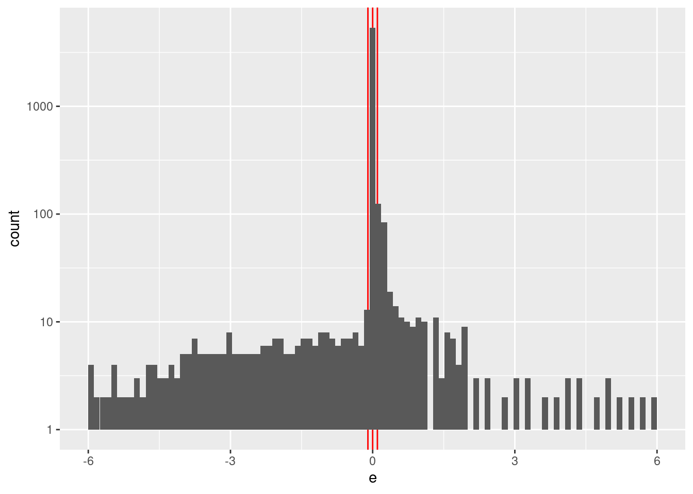
| Version | Author | Date |
|---|---|---|
| 2e83517 | Ross Gayler | 2021-09-11 |
Construct a spline specification with knots set at \(\{-6, -2, -0.1, 0, 0.1, 2, 6\}\). The linear spline encoding interpolates linearly between knots, so the knots at \(\{-0.1, 0, 0.1\}\) allow for extreme curvature of the motor command surface in that region. The knot at 2 is to allow for the slope of motor command surface observed on the range \(0 \le e \le 2\).
vsa_dim <- 1e4L # default VSA dimensionality
ss_e <- vsa_mk_scalar_encoder_spline_spec(vsa_dim = vsa_dim, knots = c(-6, -0.1, 0, 0.1, 2, 6))In using regression to decode VSA representations I will have to create a data matrix with one row per observation (the encoding of the value \(e\)). One column will correspond to the dependent variable - the target value \(u\). The remaining columns correspond to the independent variables (predictors) - the VSA vector representation of the encoded scalar value \(e\). There will be one column for each element of the VSA vector representation.
The number of columns will exceed the number of rows, so simple
unregularised regression will fail. I will initially attempt to use
regularised regression (elasticnet, implemented by glmnet in R). Prior
experimentation showed that the optimal \(\alpha = 0\) (ridge regression).
I use a random sample of observations from the simulation data. This is done because my laptop struggles with larger problems.
# number of observations in subset of data for modelling
n_samp <- 1000
# select the modelling subset
d_subset <- d_wide %>%
dplyr::slice_sample(n = n_samp) %>%
dplyr::select(u, e, e_orth, k_tgt, z, dz) # k_tgt, z, dz only used in the last sectionCreate a function to encode scalar values as VSA vectors and convert the data to a matrix suitable for later regression modelling.
# function to to take a set of numeric scalar values,
# encode them as VSA vectors using the given spline specification,
# and package the results as a data frame for regression modelling
mk_df <- function(
x, # numeric - vector of scalar values to be VSA encoded
ss # data frame - spline specification for scalar encoding
) # value - data frame - one row per scalar, one column for the scalar and each VSA element
{
tibble::tibble(x_num = x) %>% # put scalars as column of data frame
dplyr::rowwise() %>%
dplyr::mutate(
x_vsa = x_num %>% vsa_encode_scalar_spline(ss) %>% # encode each scalar
tibble(vsa_i = 1:length(.), vsa_val = .) %>% # name all the vector elements
tidyr::pivot_wider(names_from = vsa_i, names_prefix = "vsa_", values_from = vsa_val) %>% # transpose vector to columns
list() # package the value for a list column
) %>%
dplyr::ungroup() %>%
tidyr::unnest(x_vsa) %>% # convert the nested df to columns
dplyr::select(-x_num) # drop the scalar value that was encoded
}Create the training data from the subset of observations from the simulation data. This only contains the outcome \(u\) and the VSA encoding of the predictor \(e\).
# create training data
# contains: u, encode(e)
d_train <- dplyr::bind_cols(
dplyr::select(d_subset, u),
mk_df(dplyr::pull(d_subset, e), ss_e)
)
# take a quick look at the data
d_train# A tibble: 1,000 × 10,001
u vsa_1 vsa_2 vsa_3 vsa_4 vsa_5 vsa_6 vsa_7 vsa_8 vsa_9 vsa_10 vsa_11
<dbl> <int> <int> <int> <int> <int> <int> <int> <int> <int> <int> <int>
1 0.52 -1 -1 -1 -1 -1 -1 -1 -1 -1 -1 1
2 0.541 -1 -1 -1 -1 -1 -1 -1 -1 -1 -1 1
3 0.511 -1 -1 -1 -1 -1 -1 -1 -1 -1 -1 1
4 0.519 -1 -1 -1 -1 -1 -1 -1 -1 -1 -1 1
5 0.484 -1 -1 -1 -1 -1 -1 -1 -1 -1 -1 1
6 0.5 -1 -1 -1 -1 -1 -1 1 -1 -1 -1 1
7 0.163 -1 -1 -1 -1 -1 -1 -1 -1 -1 -1 1
8 0.53 -1 -1 -1 -1 -1 -1 -1 -1 -1 -1 1
9 0.507 -1 -1 -1 -1 -1 -1 -1 -1 -1 -1 1
10 0.517 -1 -1 -1 -1 -1 -1 -1 -1 -1 -1 1
# … with 990 more rows, and 9,989 more variables: vsa_12 <int>, vsa_13 <int>,
# vsa_14 <int>, vsa_15 <int>, vsa_16 <int>, vsa_17 <int>, vsa_18 <int>,
# vsa_19 <int>, vsa_20 <int>, vsa_21 <int>, vsa_22 <int>, vsa_23 <int>,
# vsa_24 <int>, vsa_25 <int>, vsa_26 <int>, vsa_27 <int>, vsa_28 <int>,
# vsa_29 <int>, vsa_30 <int>, vsa_31 <int>, vsa_32 <int>, vsa_33 <int>,
# vsa_34 <int>, vsa_35 <int>, vsa_36 <int>, vsa_37 <int>, vsa_38 <int>,
# vsa_39 <int>, vsa_40 <int>, vsa_41 <int>, vsa_42 <int>, vsa_43 <int>, …Create the test data corresponding to a regular grid of \(e\) values. This only contains the predictor \(e\) and the VSA encoding of \(e\).
# create testing data
# contains: e, encode(e)
e_test <- seq(from = -6, to = 6, by = 0.05) # grid of e values
d_test <- dplyr::bind_cols(
tibble::tibble(e = e_test),
mk_df(e_test, ss_e)
)
# take a quick look at the data
d_test# A tibble: 241 × 10,001
e vsa_1 vsa_2 vsa_3 vsa_4 vsa_5 vsa_6 vsa_7 vsa_8 vsa_9 vsa_10 vsa_11
<dbl> <int> <int> <int> <int> <int> <int> <int> <int> <int> <int> <int>
1 -6 -1 1 1 1 -1 -1 -1 -1 -1 1 -1
2 -5.95 -1 1 1 1 -1 -1 -1 -1 -1 1 -1
3 -5.9 -1 1 1 1 -1 -1 -1 -1 -1 1 -1
4 -5.85 -1 1 1 1 -1 -1 -1 -1 -1 1 -1
5 -5.8 -1 1 1 1 -1 -1 -1 -1 -1 1 -1
6 -5.75 -1 1 1 1 -1 -1 -1 -1 -1 1 -1
7 -5.7 -1 1 -1 1 -1 -1 -1 -1 -1 1 -1
8 -5.65 -1 1 1 1 -1 -1 -1 -1 -1 1 -1
9 -5.6 -1 1 1 -1 -1 -1 -1 -1 -1 1 -1
10 -5.55 -1 1 1 1 -1 -1 -1 -1 -1 1 -1
# … with 231 more rows, and 9,989 more variables: vsa_12 <int>, vsa_13 <int>,
# vsa_14 <int>, vsa_15 <int>, vsa_16 <int>, vsa_17 <int>, vsa_18 <int>,
# vsa_19 <int>, vsa_20 <int>, vsa_21 <int>, vsa_22 <int>, vsa_23 <int>,
# vsa_24 <int>, vsa_25 <int>, vsa_26 <int>, vsa_27 <int>, vsa_28 <int>,
# vsa_29 <int>, vsa_30 <int>, vsa_31 <int>, vsa_32 <int>, vsa_33 <int>,
# vsa_34 <int>, vsa_35 <int>, vsa_36 <int>, vsa_37 <int>, vsa_38 <int>,
# vsa_39 <int>, vsa_40 <int>, vsa_41 <int>, vsa_42 <int>, vsa_43 <int>, …Fit a linear (i.e. Gaussian family) regression model, predicting the scalar value \(u\) (motor command) from the VSA vector elements.
Use \(\alpha = 0\) (ridge regression).
cva.glmnet() in the code below runs cross-validation fits across a
grid of \(\lambda\) values so that we can choose the best regularisation
scheme. The \(\lambda\) parameter is the weighting of the elastic-net
penalty.
# fit a set of models at a grid of alpha and lambda parameter values
fit_1 <- glmnetUtils::cva.glmnet(u ~ ., data = d_train, family = "gaussian", alpha = 0)Look at the impact of the \(\lambda\) parameter on goodness of fit for the \(\alpha = 0\) curve.
# extract the alpha = 0 model
fit_1_alpha_0 <- fit_1$modlist[[1]]
# look at the lambda curve
plot(fit_1_alpha_0)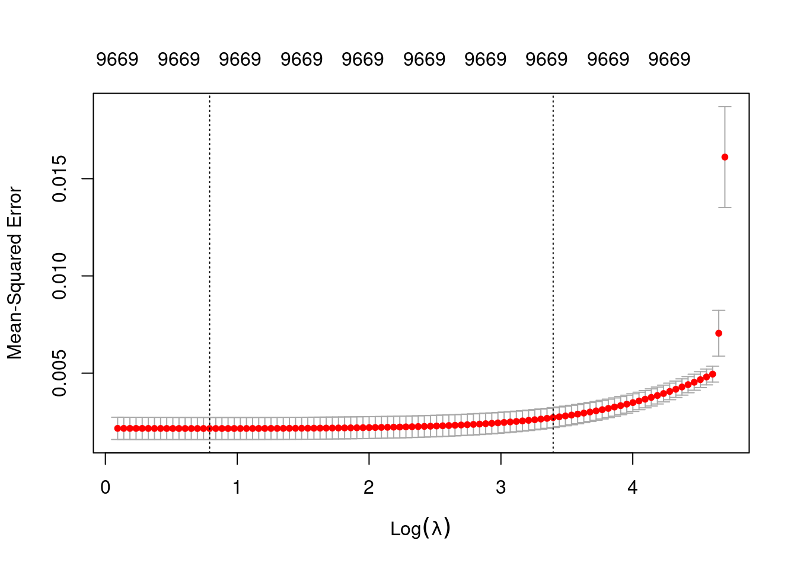
| Version | Author | Date |
|---|---|---|
| c3477c7 | Ross Gayler | 2021-09-12 |
# get a summary of the alpha = 0 model
fit_1_alpha_0
Call: glmnet::cv.glmnet(x = x, y = y, weights = ..1, offset = ..2, nfolds = nfolds, foldid = foldid, alpha = a, family = "gaussian")
Measure: Mean-Squared Error
Lambda Index Measure SE Nonzero
min 2.206 85 0.002155 0.0005702 9669
1se 29.845 29 0.002716 0.0005103 9669Prior experimentation found that the minimising \(\lambda\) is preferred over the model selected by the one-standard-error rule. The more heavily penalised model tends not to predict the extreme values of the outcome variable (too much shrinkage).
Look at how well the learned function reconstructs the previously observed empirical relation between \(u\) and \(e\).
# add the predicted values to the test data frame
d_test <- d_test %>%
dplyr::mutate(u_hat = predict(fit_1, newdata = ., alpha = 0, s = "lambda.min")) %>%
dplyr::relocate(u_hat)
# plot of predicted u vs e
d_test %>%
ggplot() +
geom_vline(xintercept = c(-6, -0.1, 0, 0.1, 2, 6), colour = "skyblue3") + # knots
geom_hline(yintercept = c(0, 1), colour = "darkgrey") + # limits of u
geom_smooth(data = d_wide, aes(x = e, y = u), method = "gam", formula = y ~ s(x, bs = "ad", k = 150)) +
geom_point(data = d_wide, aes(x = e, y = u), colour = "red", alpha = 0.2) +
geom_point(aes(x = e, y = u_hat))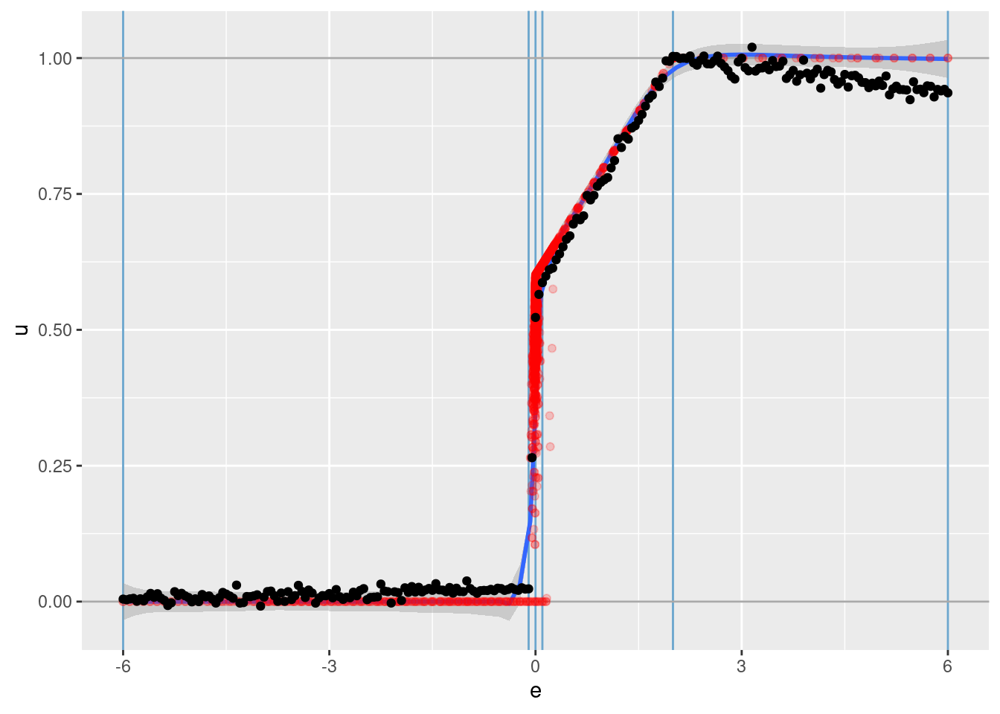
| Version | Author | Date |
|---|---|---|
| c3477c7 | Ross Gayler | 2021-09-12 |
The vertical blue lines indicate the locations of the knots on \(e\).
The horizontal grey lines indicate the limits of the motor command \(u\).
The red points are all the observations from the simulation data set.
The smooth blue curve with the grey confidence band is an adaptive smooth summarising the trend of the red points.
The black points are the \(u\) values learned from the VSA vector representation.
That’s a pretty good fit.
The reconstruction is slightly underfit (the reconstructed values are slightly closer to 0.5 than the actual values). This is most obvious in the outermost intervals (\(e \lt -0.1\) and $e ).
Model the marginal effect of the \(e_{orth}\) term.
Check the distribution of \(e_{orth}\).
summary(d_wide$e_orth) Min. 1st Qu. Median Mean 3rd Qu. Max.
-4.82950 -0.47987 0.16700 0.04648 0.70762 5.06700 d_wide %>%
ggplot2::ggplot() +
geom_vline(xintercept = c(-0.1, 0, 0.1), colour = "red") +
geom_histogram(aes(x = e_orth), bins = 100) +
scale_y_log10()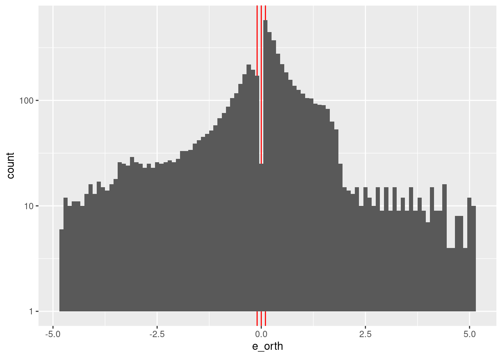
| Version | Author | Date |
|---|---|---|
| c3477c7 | Ross Gayler | 2021-09-12 |
Construct a spline specification with knots set at \({-5, 5}\). The earlier analyses showed that \(u\) is a linear function of \(e_{orth}\) when \(e \approx 0\) (otherwise \(u\) is unrelated to \(e_{orth}\)). Having only two knots will force the spline interpolation to be a linear function of \(e_{orth}\)
ss_eo <- vsa_mk_scalar_encoder_spline_spec(vsa_dim = vsa_dim, knots = c(-5, 5))Restrict this analysis to the observations with \(e \approx 0\).
d_subset_eo <- d_subset %>%
dplyr:: filter(abs(e) < 0.1)
dim(d_subset_eo)[1] 889 6Create the training data from the relevant subset of observations from the simulation data. This only contains the outcome \(u\) and the VSA encoding of the predictor \(e_{orth}\).
# create training data
# contains: u, encode(e_orth)
d_train <- dplyr::bind_cols(
dplyr::select(d_subset_eo, u),
mk_df(dplyr::pull(d_subset_eo, e_orth), ss_eo)
)
# take a quick look at the data
d_train# A tibble: 889 × 10,001
u vsa_1 vsa_2 vsa_3 vsa_4 vsa_5 vsa_6 vsa_7 vsa_8 vsa_9 vsa_10 vsa_11
<dbl> <int> <int> <int> <int> <int> <int> <int> <int> <int> <int> <int>
1 0.52 1 1 -1 1 1 -1 1 1 1 -1 1
2 0.541 1 1 -1 1 -1 -1 1 1 1 -1 1
3 0.511 1 1 -1 1 -1 -1 -1 -1 1 1 1
4 0.519 -1 1 -1 1 1 -1 1 -1 1 1 1
5 0.484 -1 1 -1 1 1 -1 -1 -1 1 -1 1
6 0.5 1 1 -1 1 1 -1 1 -1 1 1 1
7 0.163 1 1 -1 1 1 -1 -1 -1 1 -1 1
8 0.53 1 1 -1 1 -1 -1 -1 -1 1 -1 1
9 0.507 -1 1 -1 1 1 -1 -1 1 1 -1 1
10 0.517 1 1 -1 1 -1 -1 -1 1 1 1 1
# … with 879 more rows, and 9,989 more variables: vsa_12 <int>, vsa_13 <int>,
# vsa_14 <int>, vsa_15 <int>, vsa_16 <int>, vsa_17 <int>, vsa_18 <int>,
# vsa_19 <int>, vsa_20 <int>, vsa_21 <int>, vsa_22 <int>, vsa_23 <int>,
# vsa_24 <int>, vsa_25 <int>, vsa_26 <int>, vsa_27 <int>, vsa_28 <int>,
# vsa_29 <int>, vsa_30 <int>, vsa_31 <int>, vsa_32 <int>, vsa_33 <int>,
# vsa_34 <int>, vsa_35 <int>, vsa_36 <int>, vsa_37 <int>, vsa_38 <int>,
# vsa_39 <int>, vsa_40 <int>, vsa_41 <int>, vsa_42 <int>, vsa_43 <int>, …Create the test data corresponding to a regular grid of \(e_{orth}\) values. This only contains the predictor \(e_{orth}\) and the VSA encoding of \(e_{orth}\).
# create testing data
# contains: e_orth, encode(e_orth)
eo_test <- seq(from = -5, to = 5, by = 0.05) # grid of e_orth values
d_test <- dplyr::bind_cols(
tibble::tibble(e_orth = eo_test),
mk_df(eo_test, ss_eo)
)
# take a quick look at the data
d_test# A tibble: 201 × 10,001
e_orth vsa_1 vsa_2 vsa_3 vsa_4 vsa_5 vsa_6 vsa_7 vsa_8 vsa_9 vsa_10 vsa_11
<dbl> <int> <int> <int> <int> <int> <int> <int> <int> <int> <int> <int>
1 -5 -1 1 -1 1 -1 -1 1 1 1 1 1
2 -4.95 -1 1 -1 1 -1 -1 1 1 1 1 1
3 -4.9 -1 1 -1 1 -1 -1 1 1 1 1 1
4 -4.85 -1 1 -1 1 -1 -1 1 1 1 1 1
5 -4.8 -1 1 -1 1 -1 -1 1 1 1 1 1
6 -4.75 -1 1 -1 1 -1 -1 1 1 1 1 1
7 -4.7 -1 1 -1 1 -1 -1 1 1 1 1 1
8 -4.65 -1 1 -1 1 -1 -1 1 1 1 1 1
9 -4.6 -1 1 -1 1 -1 -1 1 1 1 1 1
10 -4.55 -1 1 -1 1 -1 -1 1 1 1 1 1
# … with 191 more rows, and 9,989 more variables: vsa_12 <int>, vsa_13 <int>,
# vsa_14 <int>, vsa_15 <int>, vsa_16 <int>, vsa_17 <int>, vsa_18 <int>,
# vsa_19 <int>, vsa_20 <int>, vsa_21 <int>, vsa_22 <int>, vsa_23 <int>,
# vsa_24 <int>, vsa_25 <int>, vsa_26 <int>, vsa_27 <int>, vsa_28 <int>,
# vsa_29 <int>, vsa_30 <int>, vsa_31 <int>, vsa_32 <int>, vsa_33 <int>,
# vsa_34 <int>, vsa_35 <int>, vsa_36 <int>, vsa_37 <int>, vsa_38 <int>,
# vsa_39 <int>, vsa_40 <int>, vsa_41 <int>, vsa_42 <int>, vsa_43 <int>, …Fit a linear (i.e. Gaussian family) regression model, predicting the scalar value \(u\) (motor command) from the VSA vector elements.
Use \(\alpha = 0\) (ridge regression).
# fit a set of models at a grid of alpha and lambda parameter values
fit_2 <- glmnetUtils::cva.glmnet(u ~ ., data = d_train, family = "gaussian", alpha = 0)Look at the impact of the \(\lambda\) parameter on goodness of fit for the \(\alpha = 0\) curve.
# extract the alpha = 0 model
fit_2_alpha_0 <- fit_2$modlist[[1]]
# look at the lambda curve
plot(fit_2_alpha_0)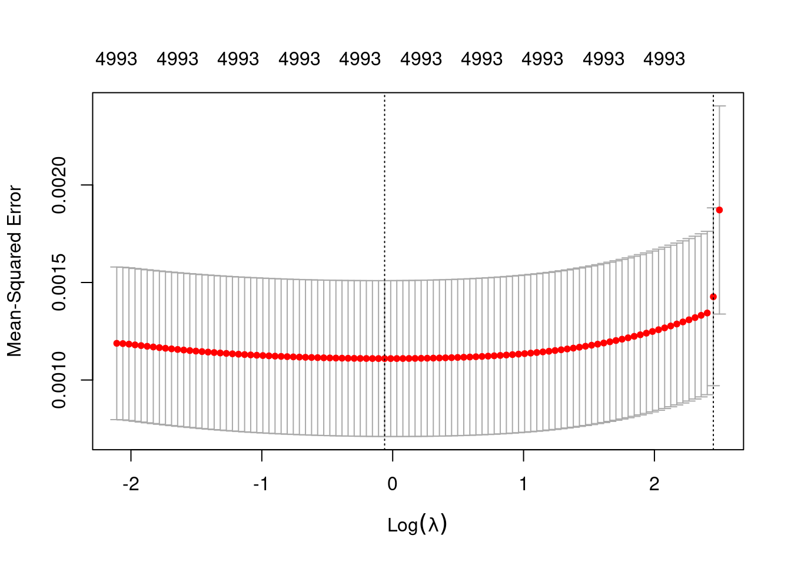
# get a summary of the alpha = 0 model
fit_2_alpha_0
Call: glmnet::cv.glmnet(x = x, y = y, weights = ..1, offset = ..2, nfolds = nfolds, foldid = foldid, alpha = a, family = "gaussian")
Measure: Mean-Squared Error
Lambda Index Measure SE Nonzero
min 0.94 56 0.001110 0.0003995 4993
1se 11.59 2 0.001427 0.0004559 4993Prior experimentation found that the minimising \(\lambda\) is preferred over the model selected by the one-standard-error rule. The more heavily penalised model tends not to predict the extreme values of the outcome variable (too much shrinkage).
Look at how well the learned function reconstructs the previously observed empirical relation between \(u\) and \(e_{orth}\).
# add the predicted values to the test data frame
d_test <- d_test %>%
dplyr::mutate(u_hat = predict(fit_2, newdata = ., alpha = 0, s = "lambda.min")) %>%
dplyr::relocate(u_hat)
# plot of predicted u vs e
d_test %>%
ggplot() +
geom_vline(xintercept = c(-5, 5), colour = "skyblue3") + # knots
geom_hline(yintercept = c(0, 1), colour = "darkgrey") + # limits of u
# geom_smooth(data = dplyr::filter(d_wide, abs(e) < 0.1), aes(x = e_orth, y = u), method = "gam", formula = y ~ s(x, bs = "ad")) +
geom_point(data = dplyr::filter(d_wide, abs(e) < 0.1), aes(x = e_orth, y = u), colour = "red", alpha = 0.2) +
geom_point(aes(x = e_orth, y = u_hat))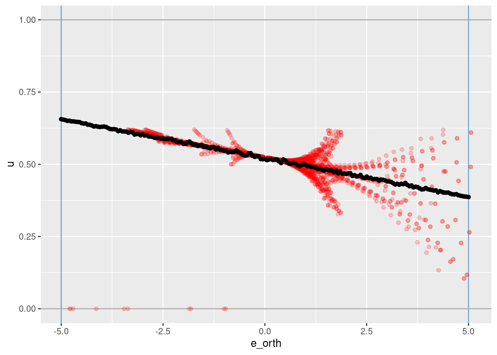
The vertical blue lines indicate the locations of the knots on \(e_{orth}\).
The horizontal grey lines indicate the limits of the motor command \(u\).
The red points are all the observations from the simulation data set with \(-0.1 \lt e \lt 0.1\).
The black points are the \(u\) values learned from the VSA vector representation.
The fit is linear, as expected from only having two knots.
The reconstruction is slightly underfit (the reconstructed slope is slightly less than the trend of the actual data.
The dispersion of the red points around the black trend line are due to overshoot and oscillation in the simulated PID controller.
Model the joint effect of \(e\) and \(e_{orth}\).
We are trying to learn a function \(e \times e_{orth} \to u\), so it’s appropriate to use \(encode(e) \otimes encode(e_{orth})\) as the VSA predictor. This equivalent to modelling \(u\) from the Cartesian product of the knots for \(e\) and \(e_{orth}\).
Create a function to encode scalar values of \(e\) and \(e_{orth}\) as VSA vectors, calculate the VSA product of their representations, and convert the data to a matrix suitable for later regression modelling.
This is particularly appropriate because the curvature of the empirical \(u\) surface is axis parallel to \(e\) and \(e_{orth}\).
# function to to take two sets of numeric scalar values,
# encode them as VSA vectors using the given spline specifications,
# calculate the VSA product of the two VSA representations
# and package the results as a data frame for regression modelling
mk_df_j2 <- function(
x_e, # numeric - vectors of scalar values to be VSA encoded
x_eo,
ss_e, # data frame - spline specifications for the scalar encodings
ss_eo
) # value - data frame - one row per scalar, one column for the scalar and each VSA element
{
tibble::tibble(x_e = x_e, x_eo = x_eo) %>% # put scalars as column of data frame
dplyr::rowwise() %>%
dplyr::mutate(
x_vsa = vsa_multiply(
vsa_encode_scalar_spline(x_e, ss_e),
vsa_encode_scalar_spline(x_eo, ss_eo)
) %>%
tibble(vsa_i = 1:length(.), vsa_val = .) %>% # name all the vector elements
tidyr::pivot_wider(names_from = vsa_i, names_prefix = "vsa_", values_from = vsa_val) %>% # transpose vector to columns
list() # package the value for a list column
) %>%
dplyr::ungroup() %>%
tidyr::unnest(x_vsa) %>% # convert the nested df to columns
dplyr::select(-x_e, -x_eo) # drop the scalar value that was encoded
}Create the training data from the subset of observations from the simulation data. This only contains the outcome \(u\) and the VSA encoding of the predictor \(encode(e) \otimes encode(e_{orth})\)$.
# create training data
# contains: u, encode(e) * encode(e_orth)
d_train <- dplyr::bind_cols(
dplyr::select(d_subset, u),
mk_df_j2(dplyr::pull(d_subset, e), dplyr::pull(d_subset, e_orth), ss_e, ss_eo)
)
# take a quick look at the data
d_train# A tibble: 1,000 × 10,001
u vsa_1 vsa_2 vsa_3 vsa_4 vsa_5 vsa_6 vsa_7 vsa_8 vsa_9 vsa_10 vsa_11
<dbl> <int> <int> <int> <int> <int> <int> <int> <int> <int> <int> <int>
1 0.52 1 -1 1 -1 -1 1 1 1 -1 -1 1
2 0.541 -1 -1 1 -1 1 1 -1 1 -1 1 1
3 0.511 1 -1 1 -1 -1 1 -1 1 -1 1 1
4 0.519 1 -1 1 -1 -1 1 -1 -1 -1 1 1
5 0.484 -1 -1 1 -1 -1 1 -1 -1 -1 1 1
6 0.5 1 -1 1 -1 -1 1 1 1 -1 1 1
7 0.163 -1 -1 1 -1 -1 1 1 1 -1 1 1
8 0.53 -1 -1 1 -1 1 1 -1 1 -1 1 1
9 0.507 -1 -1 1 -1 -1 1 1 1 -1 1 1
10 0.517 1 -1 1 -1 1 1 1 -1 -1 1 1
# … with 990 more rows, and 9,989 more variables: vsa_12 <int>, vsa_13 <int>,
# vsa_14 <int>, vsa_15 <int>, vsa_16 <int>, vsa_17 <int>, vsa_18 <int>,
# vsa_19 <int>, vsa_20 <int>, vsa_21 <int>, vsa_22 <int>, vsa_23 <int>,
# vsa_24 <int>, vsa_25 <int>, vsa_26 <int>, vsa_27 <int>, vsa_28 <int>,
# vsa_29 <int>, vsa_30 <int>, vsa_31 <int>, vsa_32 <int>, vsa_33 <int>,
# vsa_34 <int>, vsa_35 <int>, vsa_36 <int>, vsa_37 <int>, vsa_38 <int>,
# vsa_39 <int>, vsa_40 <int>, vsa_41 <int>, vsa_42 <int>, vsa_43 <int>, …Create the test data corresponding to a regular grid of \(e\) and \(e_{orth}\) values. This only contains the predictors \(e\) \(e_{orth}\), and the VSA encoding of \(encode(e) \otimes encode(e_{orth})\).
# create testing data
# contains: e, e_orth, encode(e) * encode(e_orth)
e_test <- c(seq(from = -6, to = -1, by = 1), seq(from = -0.2, to = 0.2, by = 0.05), seq(from = 1, to = 6, by = 1)) # grid of e values
eo_test <- seq(from = -5, to = 5, by = 1) # grid of e values
d_grid <- tidyr::expand_grid(e = e_test, e_orth = eo_test)
d_test <- dplyr::bind_cols(
d_grid,
mk_df_j2(dplyr::pull(d_grid, e), dplyr::pull(d_grid, e_orth), ss_e, ss_eo)
)
# take a quick look at the data
d_test# A tibble: 231 × 10,002
e e_orth vsa_1 vsa_2 vsa_3 vsa_4 vsa_5 vsa_6 vsa_7 vsa_8 vsa_9 vsa_10
<dbl> <dbl> <int> <int> <int> <int> <int> <int> <int> <int> <int> <int>
1 -6 -5 1 1 -1 1 1 1 -1 -1 -1 1
2 -6 -4 1 1 -1 1 1 1 -1 -1 -1 1
3 -6 -3 1 1 -1 1 1 1 -1 -1 -1 -1
4 -6 -2 1 1 -1 1 -1 1 -1 -1 -1 -1
5 -6 -1 -1 1 -1 1 1 1 1 1 -1 1
6 -6 0 -1 1 -1 1 -1 1 1 -1 -1 1
7 -6 1 1 1 -1 1 1 1 -1 -1 -1 -1
8 -6 2 1 1 -1 1 -1 1 1 1 -1 -1
9 -6 3 1 1 -1 1 1 1 1 1 -1 1
10 -6 4 -1 1 -1 1 -1 1 1 1 -1 -1
# … with 221 more rows, and 9,990 more variables: vsa_11 <int>, vsa_12 <int>,
# vsa_13 <int>, vsa_14 <int>, vsa_15 <int>, vsa_16 <int>, vsa_17 <int>,
# vsa_18 <int>, vsa_19 <int>, vsa_20 <int>, vsa_21 <int>, vsa_22 <int>,
# vsa_23 <int>, vsa_24 <int>, vsa_25 <int>, vsa_26 <int>, vsa_27 <int>,
# vsa_28 <int>, vsa_29 <int>, vsa_30 <int>, vsa_31 <int>, vsa_32 <int>,
# vsa_33 <int>, vsa_34 <int>, vsa_35 <int>, vsa_36 <int>, vsa_37 <int>,
# vsa_38 <int>, vsa_39 <int>, vsa_40 <int>, vsa_41 <int>, vsa_42 <int>, …Fit a linear (i.e. Gaussian family) regression model, predicting the scalar value \(u\) (motor command) from the VSA vector elements.
Use \(\alpha = 0\) (ridge regression).
# fit a set of models at a grid of alpha and lambda parameter values
fit_3 <- glmnetUtils::cva.glmnet(u ~ ., data = d_train, family = "gaussian", alpha = 0)Look at the impact of the \(\lambda\) parameter on goodness of fit for the \(\alpha = 0\) curve.
# extract the alpha = 0 model
fit_3_alpha_0 <- fit_3$modlist[[1]]
# look at the lambda curve
plot(fit_3_alpha_0)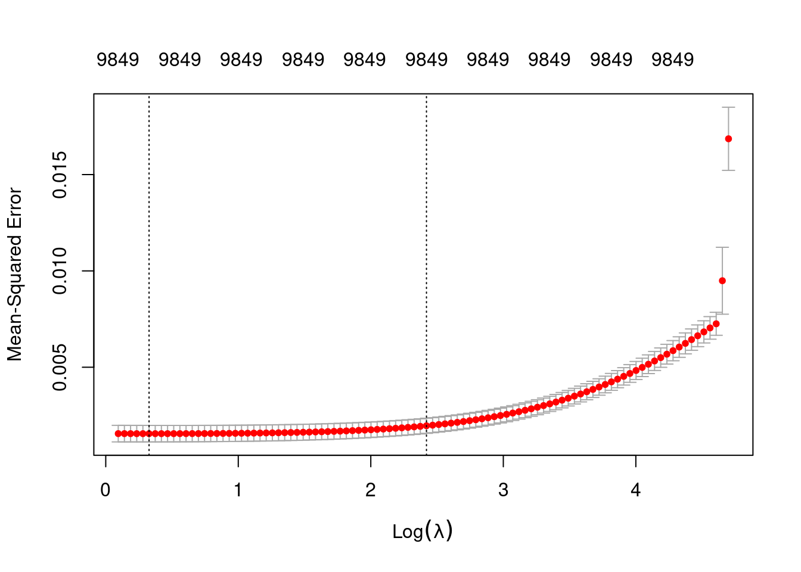
| Version | Author | Date |
|---|---|---|
| c3477c7 | Ross Gayler | 2021-09-12 |
# get a summary of the alpha = 0 model
fit_3_alpha_0
Call: glmnet::cv.glmnet(x = x, y = y, weights = ..1, offset = ..2, nfolds = nfolds, foldid = foldid, alpha = a, family = "gaussian")
Measure: Mean-Squared Error
Lambda Index Measure SE Nonzero
min 1.387 95 0.001552 0.0004283 9849
1se 11.247 50 0.001961 0.0003915 9849Prior experimentation found that the minimising \(\lambda\) is preferred over the model selected by the one-standard-error rule. The more heavily penalised model tends not to predict the extreme values of the outcome variable (too much shrinkage).
Look at how well the learned function reconstructs the previously observed empirical relation from \(e \times e_{orth}\) to \(u\).
# add the predicted values to the test data frame
d_test <- d_test %>%
dplyr::mutate(u_hat = predict(fit_3, newdata = ., alpha = 0, s = "lambda.min")) %>%
dplyr::relocate(u_hat)
# plot of predicted u vs e * e_orth
d_test %>%
ggplot() +
geom_point(aes(x = e, y = e_orth, size = u_hat, colour = u_hat)) +
scale_color_viridis_c()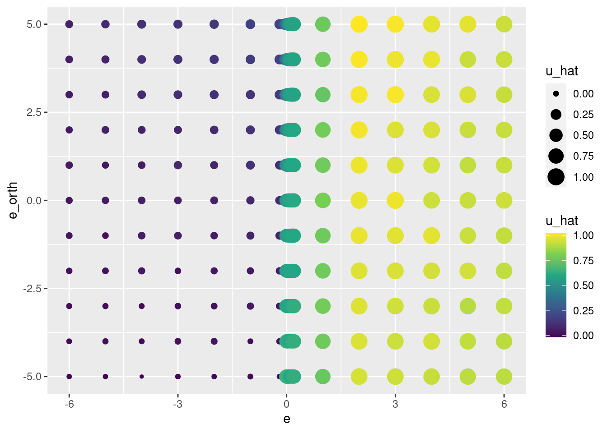
lattice::wireframe(u_hat ~ e * e_orth, data = d_test, drape = TRUE)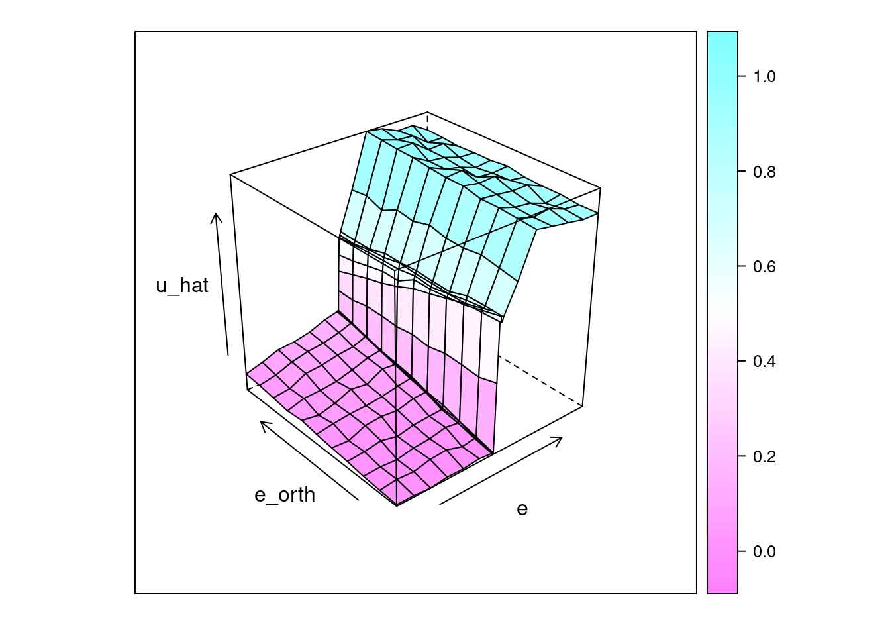
| Version | Author | Date |
|---|---|---|
| c3477c7 | Ross Gayler | 2021-09-12 |
d_test %>%
ggplot() +
geom_point(aes(x = e_orth, y = u_hat)) +
facet_wrap(facets = vars(e))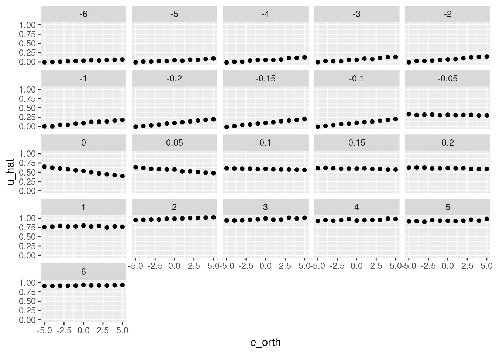
| Version | Author | Date |
|---|---|---|
| c3477c7 | Ross Gayler | 2021-09-12 |
That looks like a pretty good reconstruction of the empirical relationship from \(e\) and \(e_{orth}\) to \(u\).
So, that works reasonably well.
The predictors in the earlier sections, \(e\) and \(e_{orth}\), are deterministic functions of \(k_{tgt}\), \(z\), and \(dz\).
In principle, we should be able to learn the function \(k_{tgt} \times z \times dz \to u\). However, the curvature in the \(u\) surface would no longer be axis-parallel, and it would not be possible to hand-craft the knots on the variables to reflect the demands of the task.
Consequently, I think it’s likely a naive approach to doing this won’t work.
Model the joint effect of \(k_{tgt}\), \(z\), and \(dz\).
Check the distributions of input variables.
summary(d_wide$k_tgt) Min. 1st Qu. Median Mean 3rd Qu. Max.
1.000 2.000 4.000 4.001 5.000 8.000 d_wide %>%
ggplot2::ggplot() +
geom_histogram(aes(x = k_tgt), bins = 100)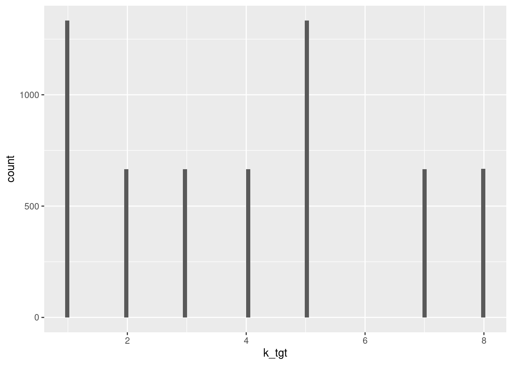
| Version | Author | Date |
|---|---|---|
| 9724aa5 | Ross Gayler | 2021-09-12 |
summary(d_wide$z) Min. 1st Qu. Median Mean 3rd Qu. Max.
1.079 2.549 3.807 3.979 5.086 7.926 d_wide %>%
ggplot2::ggplot() +
geom_histogram(aes(x = z), bins = 100) +
scale_y_log10()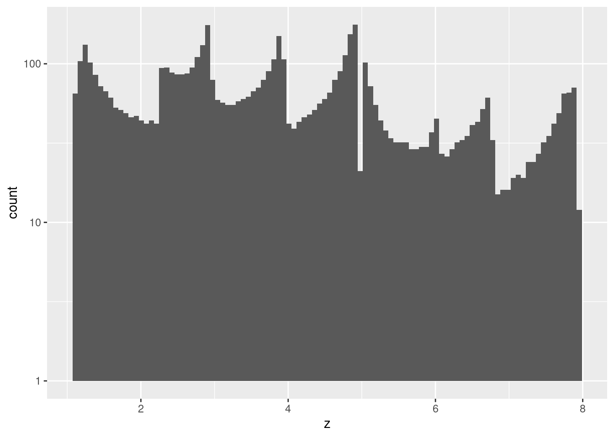
summary(d_wide$dz) Min. 1st Qu. Median Mean 3rd Qu. Max.
-4.9950 -0.4522 0.1640 0.0708 0.6793 5.0730 d_wide %>%
ggplot2::ggplot() +
geom_histogram(aes(x = dz), bins = 100) +
scale_y_log10()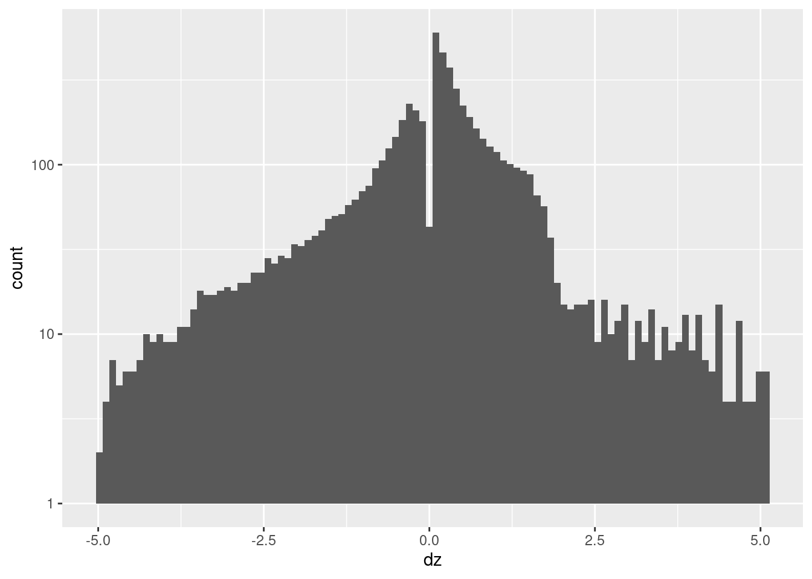
We can’t choose the knots to meet the expected task demands, so just encode each predictor with a uniformly spaced grid of knots.
Choose the number of knots to make the spacing relatively close (to try to capture regions of sharp curvature), On the other hand, the linear spline encoding scheme only interpolates between adjacent knots, so it can’t generalise over greater distances. Using a large number of knots makes the learning process more like a nearest neighbour lookup process, so sparsity of data relative to the grid of knots will become a problem.
Create the spline specifications for each of the predictor variables.
ss_tgt <- vsa_mk_scalar_encoder_spline_spec(vsa_dim = vsa_dim, knots = seq(from = 1, to = 8, by = 0.5))
ss_z <- vsa_mk_scalar_encoder_spline_spec(vsa_dim = vsa_dim, knots = seq(from = 1, to = 8, by = 0.5))
ss_dz <- vsa_mk_scalar_encoder_spline_spec(vsa_dim = vsa_dim, knots = seq(from = -5, to = 5, by = 0.5))We are trying to learn a function \(k_{tgt} \times z \times dz \to u\), so it’s appropriate to use \(encode(k_{tgt}) \otimes encode(z) \otimes encode(dz)\) as the VSA predictor. This is equivalent to modelling \(u\) from the Cartesian product of the knots for \(k_{tgt}\), \(z\), and \(dz\).
Create a function to encode scalar values of \(k_{tgt}\), \(z\), and \(dz\) as VSA vectors, calculate the VSA product of their representations, and convert the data to a matrix suitable for later regression modelling.
# function to to take 3 sets of numeric scalar values,
# encode them as VSA vectors using the given spline specifications,
# calculate the VSA product of the VSA representations
# and package the results as a data frame for regression modelling
mk_df_j3 <- function(
x_tgt, # numeric - vectors of scalar values to be VSA encoded
x_z,
x_dz,
ss_tgt,# data frame - spline specifications for scalar encoding
ss_z,
ss_dz
) # value - data frame - one row per 3 scalars, one column for each scalar and each VSA element
{
tibble::tibble(x_tgt = x_tgt, x_z = x_z, x_dz = x_dz) %>% # put scalars as columns of data frame
dplyr::rowwise() %>%
dplyr::mutate(
x_vsa = vsa_multiply(
vsa_encode_scalar_spline(x_tgt, ss_tgt),
vsa_encode_scalar_spline(x_z, ss_z),
vsa_encode_scalar_spline(x_dz, ss_dz)
) %>%
tibble(vsa_i = 1:length(.), vsa_val = .) %>% # name all the vector elements
tidyr::pivot_wider(names_from = vsa_i, names_prefix = "vsa_", values_from = vsa_val) %>% # transpose vector to columns
list() # package the value for a list column
) %>%
dplyr::ungroup() %>%
tidyr::unnest(x_vsa) %>% # convert the nested df to columns
dplyr::select(-x_tgt, -x_z, -x_dz) # drop the scalar values that were encoded
}Create the training data from the subset of observations from the simulation data. This only contains the outcome \(u\) and the VSA encoding of the predictor \(encode(k_{tgt}) \otimes encode(z) \otimes encode(dz)\).
# create training data
# contains: u, encode(e)
d_train <- dplyr::bind_cols(
dplyr::select(d_subset, u),
mk_df_j3(dplyr::pull(d_subset, k_tgt), dplyr::pull(d_subset, z), dplyr::pull(d_subset, dz), ss_tgt, ss_z, ss_dz)
)
# take a quick look at the data
d_train# A tibble: 1,000 × 10,001
u vsa_1 vsa_2 vsa_3 vsa_4 vsa_5 vsa_6 vsa_7 vsa_8 vsa_9 vsa_10 vsa_11
<dbl> <int> <int> <int> <int> <int> <int> <int> <int> <int> <int> <int>
1 0.52 1 1 -1 -1 -1 1 1 -1 1 -1 -1
2 0.541 -1 -1 1 1 1 -1 -1 1 1 1 1
3 0.511 -1 1 -1 -1 -1 1 -1 1 1 1 1
4 0.519 1 1 1 -1 -1 -1 -1 -1 1 1 -1
5 0.484 -1 1 -1 -1 -1 1 1 -1 1 1 -1
6 0.5 1 -1 1 1 -1 1 1 -1 1 1 1
7 0.163 -1 1 1 1 1 1 1 -1 -1 -1 1
8 0.53 -1 1 -1 -1 1 -1 -1 1 1 1 1
9 0.507 -1 -1 1 1 -1 1 -1 1 1 1 1
10 0.517 1 -1 1 -1 -1 1 -1 1 1 -1 1
# … with 990 more rows, and 9,989 more variables: vsa_12 <int>, vsa_13 <int>,
# vsa_14 <int>, vsa_15 <int>, vsa_16 <int>, vsa_17 <int>, vsa_18 <int>,
# vsa_19 <int>, vsa_20 <int>, vsa_21 <int>, vsa_22 <int>, vsa_23 <int>,
# vsa_24 <int>, vsa_25 <int>, vsa_26 <int>, vsa_27 <int>, vsa_28 <int>,
# vsa_29 <int>, vsa_30 <int>, vsa_31 <int>, vsa_32 <int>, vsa_33 <int>,
# vsa_34 <int>, vsa_35 <int>, vsa_36 <int>, vsa_37 <int>, vsa_38 <int>,
# vsa_39 <int>, vsa_40 <int>, vsa_41 <int>, vsa_42 <int>, vsa_43 <int>, …Create the test data corresponding to a regular grid of \(k_{tgt}\), \(z\), and \(dz\) values. Calculate \(e\) and \(e_{orth}\) from the input values. Add the VSA vector encoding of \(encode(k_{tgt}) \otimes encode(z) \otimes encode(dz)\).
Filter the observations to only have values of \(e\) and \(e_{orth}\) that are in the range observed in the simulation data.
# create testing data
# contains: k_tgt, z, dz, e, e_orth, encode(k_tgt) * encode(z) * encode(dz)
tgt_test <- 1:8 # grid of k_tgt values
z_test <- seq(from = 1, to = 8, by = 0.5) # grid of z values
dz_test <- seq(from = -5, to = 5, by = 0.5) # grid of dz values
d_grid <- tidyr::expand_grid(k_tgt = tgt_test, z = z_test, dz = dz_test) %>%
dplyr::mutate(
i1 = k_tgt - z,
e = i1 - dz,
e_orth = (i1 + dz)/2
) %>%
dplyr::filter(abs(e)<= 6 & abs(e_orth) <= 5) # remove extreme values of e and e_orth
d_test <- dplyr::bind_cols(
d_grid,
mk_df_j3(dplyr::pull(d_grid, k_tgt), dplyr::pull(d_grid, z), dplyr::pull(d_grid, dz), ss_tgt, ss_z, ss_dz)
)
# take a quick look at the data
d_test# A tibble: 2,088 × 10,006
k_tgt z dz i1 e e_orth vsa_1 vsa_2 vsa_3 vsa_4 vsa_5 vsa_6
<int> <dbl> <dbl> <dbl> <dbl> <dbl> <int> <int> <int> <int> <int> <int>
1 1 1 -5 0 5 -2.5 -1 -1 1 -1 -1 1
2 1 1 -4.5 0 4.5 -2.25 1 1 1 -1 1 1
3 1 1 -4 0 4 -2 -1 1 -1 -1 1 -1
4 1 1 -3.5 0 3.5 -1.75 -1 1 -1 1 -1 -1
5 1 1 -3 0 3 -1.5 -1 -1 1 -1 -1 1
6 1 1 -2.5 0 2.5 -1.25 1 -1 1 -1 -1 1
7 1 1 -2 0 2 -1 -1 -1 1 1 -1 1
8 1 1 -1.5 0 1.5 -0.75 1 1 -1 1 -1 -1
9 1 1 -1 0 1 -0.5 1 -1 -1 1 -1 1
10 1 1 -0.5 0 0.5 -0.25 -1 1 1 -1 1 1
# … with 2,078 more rows, and 9,994 more variables: vsa_7 <int>, vsa_8 <int>,
# vsa_9 <int>, vsa_10 <int>, vsa_11 <int>, vsa_12 <int>, vsa_13 <int>,
# vsa_14 <int>, vsa_15 <int>, vsa_16 <int>, vsa_17 <int>, vsa_18 <int>,
# vsa_19 <int>, vsa_20 <int>, vsa_21 <int>, vsa_22 <int>, vsa_23 <int>,
# vsa_24 <int>, vsa_25 <int>, vsa_26 <int>, vsa_27 <int>, vsa_28 <int>,
# vsa_29 <int>, vsa_30 <int>, vsa_31 <int>, vsa_32 <int>, vsa_33 <int>,
# vsa_34 <int>, vsa_35 <int>, vsa_36 <int>, vsa_37 <int>, vsa_38 <int>, …Fit a linear (i.e. Gaussian family) regression model, predicting the scalar value \(u\) (motor command) from the VSA vector elements.
Use \(\alpha = 0\) (ridge regression).
# fit a set of models at a grid of alpha and lambda parameter values
fit_4 <- glmnetUtils::cva.glmnet(u ~ ., data = d_train, family = "gaussian", alpha = 0)Look at the impact of the \(\lambda\) parameter on goodness of fit for the \(\alpha = 0\) curve.
# extract the alpha = 0 model
fit_4_alpha_0 <- fit_4$modlist[[1]]
# look at the lambda curve
plot(fit_4_alpha_0)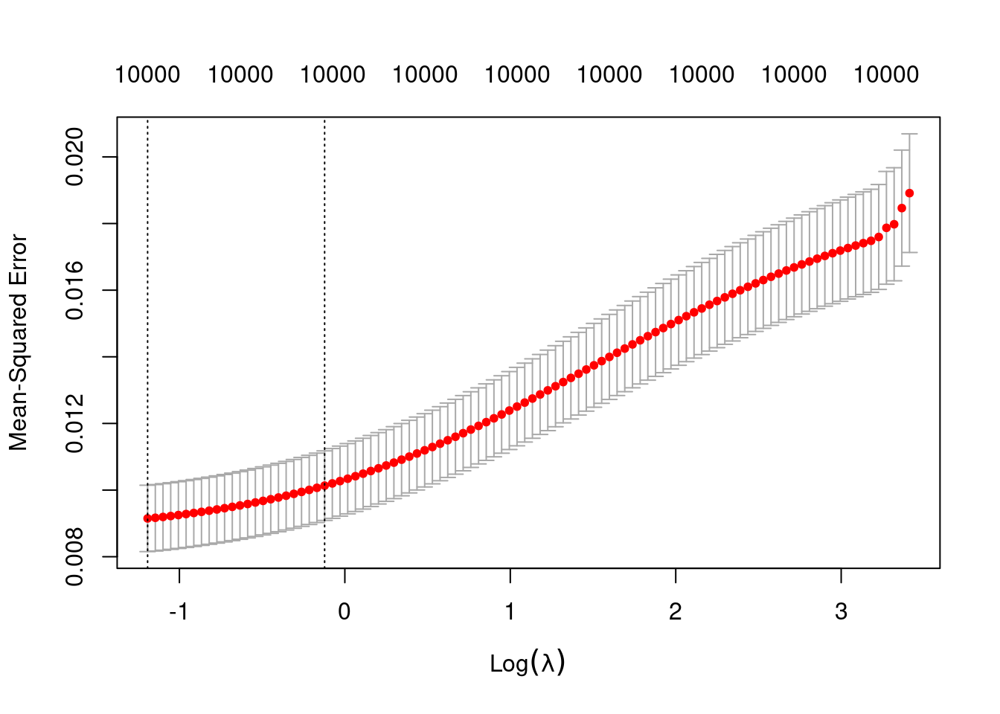
# get a summary of the alpha = 0 model
fit_4_alpha_0
Call: glmnet::cv.glmnet(x = x, y = y, weights = ..1, offset = ..2, nfolds = nfolds, foldid = foldid, alpha = a, family = "gaussian")
Measure: Mean-Squared Error
Lambda Index Measure SE Nonzero
min 0.3036 100 0.009149 0.0009965 10000
1se 0.8850 77 0.010133 0.0010442 10000Prior experimentation found that the minimising \(\lambda\) is preferred over the model selected by the one-standard-error rule. The more heavily penalised model tends not to predict the extreme values of the outcome variable (too much shrinkage).
Look at how well the learned function reconstructs the previously observed empirical relation from \(e \times e_{orth}\) to \(u\).
# add the predicted values to the test data frame
d_test <- d_test %>%
dplyr::mutate(u_hat = predict(fit_4, newdata = ., alpha = 0, s = "lambda.min")) %>%
dplyr::relocate(u_hat)Check the distributions of \(e\) and \(e_{orth}\) values (remember - these were calculated from the grid of input variables).
summary(d_test$e) Min. 1st Qu. Median Mean 3rd Qu. Max.
-6.0 -2.5 0.0 0.0 2.5 6.0 d_test %>%
ggplot2::ggplot() +
geom_histogram(aes(x = e), bins = 100)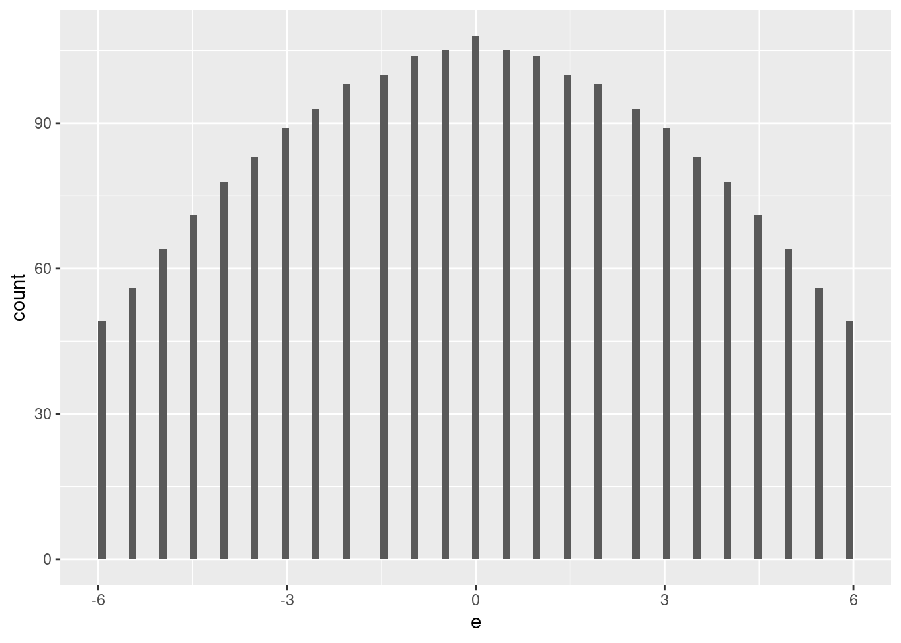
summary(d_test$e_orth) Min. 1st Qu. Median Mean 3rd Qu. Max.
-5.00 -1.75 0.00 0.00 1.75 5.00 d_test %>%
ggplot2::ggplot() +
geom_histogram(aes(x = e_orth), bins = 100)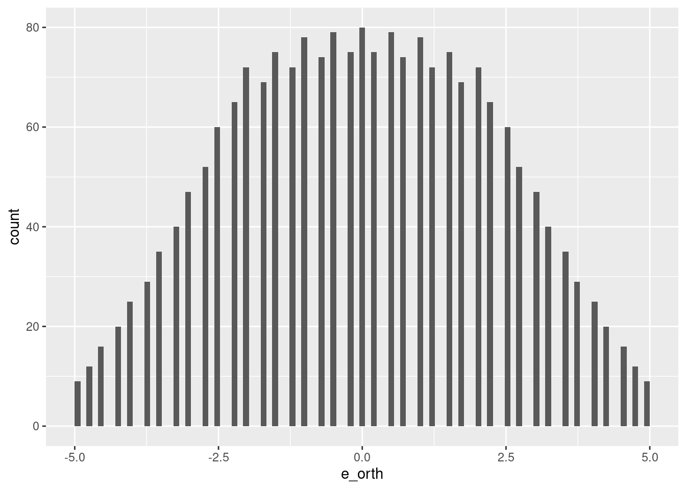
d_test %>%
ggplot2::ggplot() +
geom_vline(xintercept = 0, colour = "red") +
geom_jitter(aes(x = e, y = e_orth))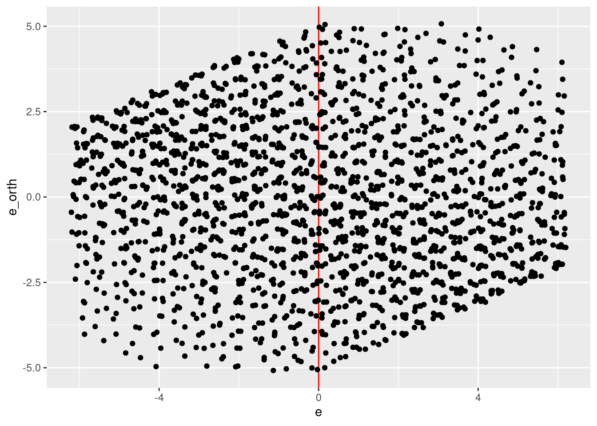
Check the distribution of predicted \(u\) values.
summary(d_test$u_hat) lambda.min
Min. :0.001295
1st Qu.:0.452549
Median :0.475719
Mean :0.474845
3rd Qu.:0.499801
Max. :0.854391 d_test %>%
ggplot2::ggplot() +
geom_histogram(aes(x = u_hat), bins = 100)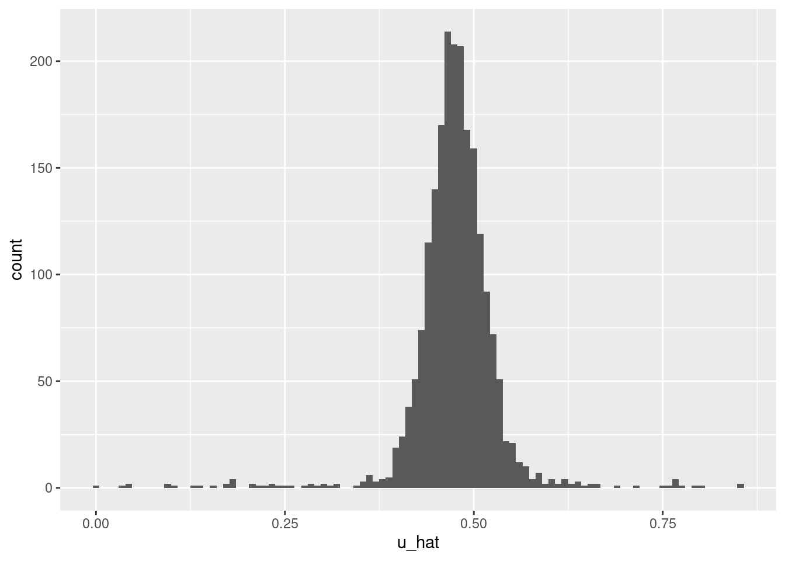
Look at how well the learned function reconstructs the previously observed empirical relation between \(u\) and \(e\).
# plot of predicted u vs e * e_orth
d_test %>%
ggplot() +
geom_jitter(aes(x = e, y = e_orth, colour = u_hat)) +
scale_color_viridis_c()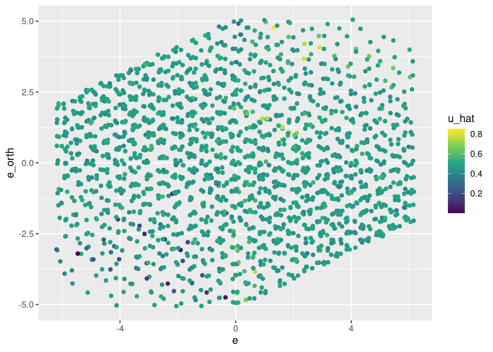
d_test %>%
ggplot() +
geom_jitter(aes(x = e, y = e_orth, colour = u_hat)) +
scale_color_viridis_c() +
facet_wrap(facets = vars(k_tgt))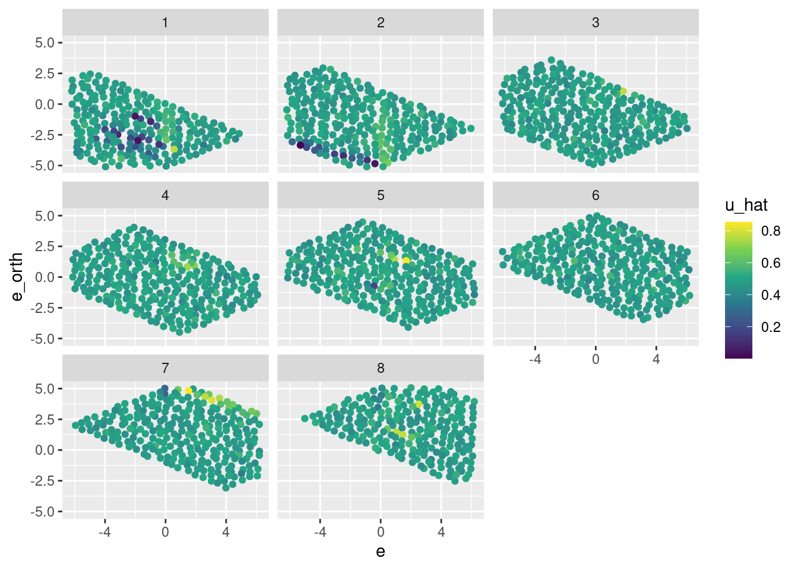
d_test %>%
ggplot() +
geom_point(aes(x = e, y = u_hat)) +
geom_smooth(aes(x = e, y = u_hat)) +
facet_wrap(facets = vars(k_tgt))`geom_smooth()` using method = 'loess' and formula 'y ~ x'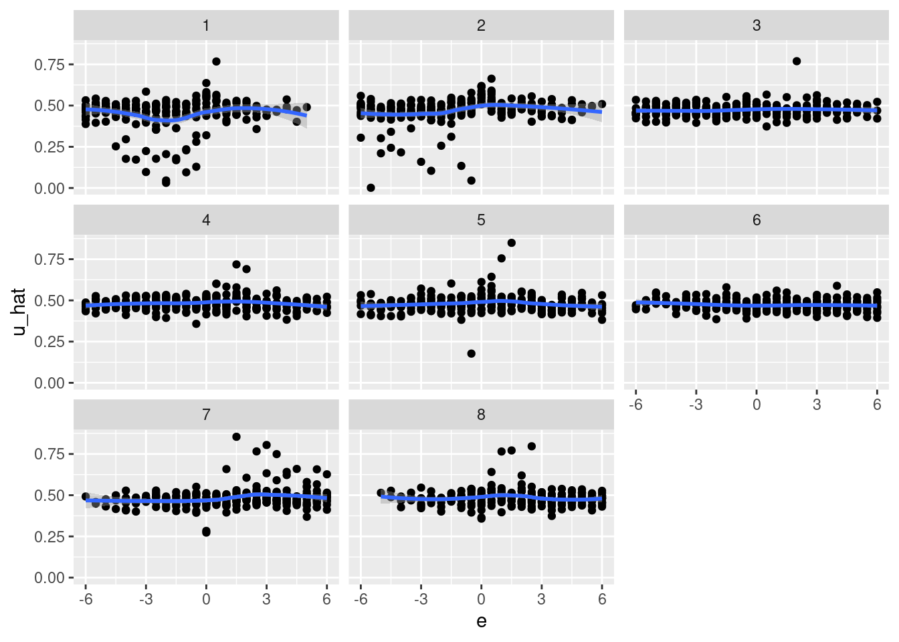
d_test %>%
dplyr::filter(abs(e) < 0.1) %>%
ggplot() +
geom_point(aes(x = e_orth, y = u_hat)) +
geom_smooth(aes(x = e_orth, y = u_hat), method = "lm") +
facet_wrap(facets = vars(k_tgt))`geom_smooth()` using formula 'y ~ x'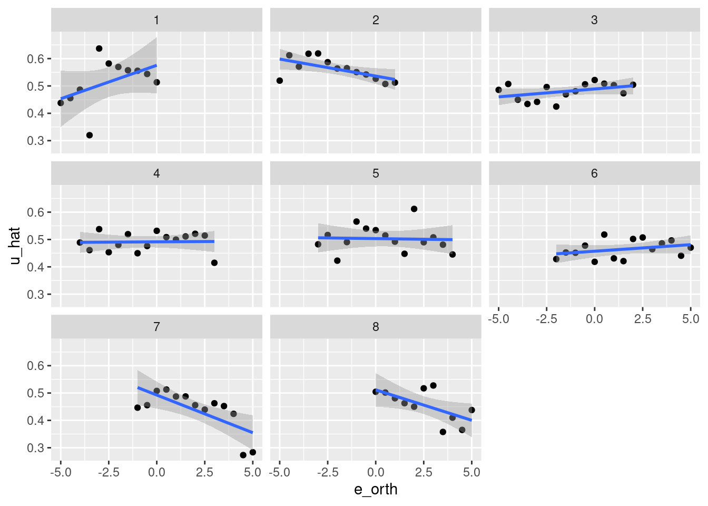
sessionInfo()R version 4.1.1 (2021-08-10)
Platform: x86_64-pc-linux-gnu (64-bit)
Running under: Ubuntu 21.04
Matrix products: default
BLAS: /usr/lib/x86_64-linux-gnu/blas/libblas.so.3.9.0
LAPACK: /usr/lib/x86_64-linux-gnu/lapack/liblapack.so.3.9.0
locale:
[1] LC_CTYPE=en_AU.UTF-8 LC_NUMERIC=C
[3] LC_TIME=en_AU.UTF-8 LC_COLLATE=en_AU.UTF-8
[5] LC_MONETARY=en_AU.UTF-8 LC_MESSAGES=en_AU.UTF-8
[7] LC_PAPER=en_AU.UTF-8 LC_NAME=C
[9] LC_ADDRESS=C LC_TELEPHONE=C
[11] LC_MEASUREMENT=en_AU.UTF-8 LC_IDENTIFICATION=C
attached base packages:
[1] stats graphics grDevices datasets utils methods base
other attached packages:
[1] purrr_0.3.4 DiagrammeR_1.0.6.1 lattice_0.20-44 glmnetUtils_1.1.8
[5] glmnet_4.1-2 Matrix_1.3-4 tidyr_1.1.3 tibble_3.1.4
[9] ggplot2_3.3.5 stringr_1.4.0 dplyr_1.0.7 vroom_1.5.4
[13] here_1.0.1 fs_1.5.0
loaded via a namespace (and not attached):
[1] Rcpp_1.0.7 visNetwork_2.0.9 rprojroot_2.0.2 digest_0.6.27
[5] foreach_1.5.1 utf8_1.2.2 R6_2.5.1 evaluate_0.14
[9] highr_0.9 pillar_1.6.2 rlang_0.4.11 rstudioapi_0.13
[13] whisker_0.4 rmarkdown_2.10 labeling_0.4.2 splines_4.1.1
[17] htmlwidgets_1.5.4 bit_4.0.4 munsell_0.5.0 compiler_4.1.1
[21] httpuv_1.6.3 xfun_0.25 pkgconfig_2.0.3 shape_1.4.6
[25] mgcv_1.8-36 htmltools_0.5.2 tidyselect_1.1.1 bookdown_0.24
[29] workflowr_1.6.2 codetools_0.2-18 viridisLite_0.4.0 fansi_0.5.0
[33] crayon_1.4.1 tzdb_0.1.2 withr_2.4.2 later_1.3.0
[37] grid_4.1.1 nlme_3.1-153 jsonlite_1.7.2 gtable_0.3.0
[41] lifecycle_1.0.0 git2r_0.28.0 magrittr_2.0.1 scales_1.1.1
[45] cli_3.0.1 stringi_1.7.4 farver_2.1.0 renv_0.14.0
[49] promises_1.2.0.1 ellipsis_0.3.2 generics_0.1.0 vctrs_0.3.8
[53] RColorBrewer_1.1-2 iterators_1.0.13 tools_4.1.1 bit64_4.0.5
[57] glue_1.4.2 parallel_4.1.1 fastmap_1.1.0 survival_3.2-13
[61] yaml_2.2.1 colorspace_2.0-2 knitr_1.34